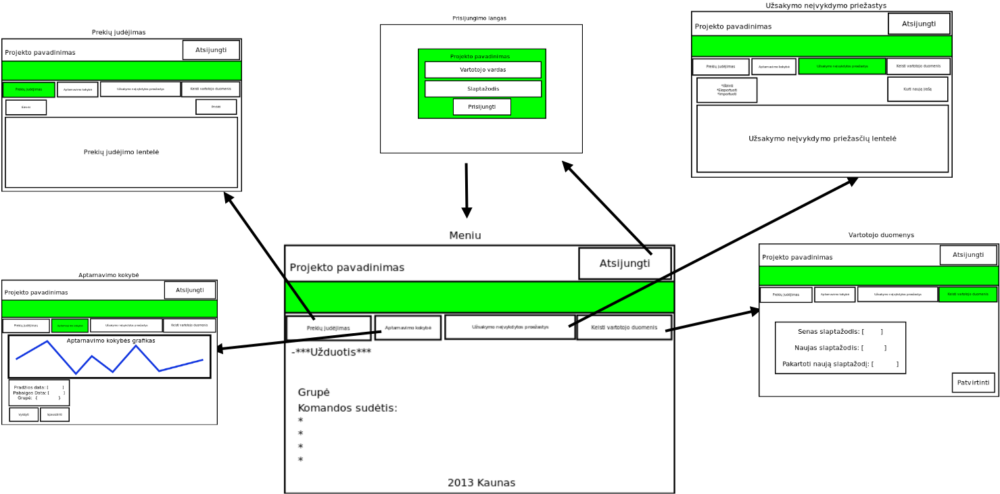
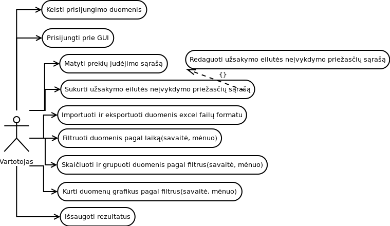

Duomenų bazės diagrama
Duomenų bazių lentelės su nusakytais ryšiais tarpusavyje

Klasių diagramos
Turime klasių diagramą
{kind=link}
GUI sasajos tarpusavyje
Turime puslapių langų nuorodų į kitų puslapių schemą
{kind=link}
Darbų planų schema
Mėlyna - programavimas. Žalia - maketavimas. Raudona - testavimas. Orandžinė - finalizavimas. Žmonės bus paskirstomi darbams pagal poreikius

{kind=link}
{kind=link}
{kind=link}
{kind=link}
{kind=link}
{kind=link}
Specifikacija
Bendrieji reikalavimai:
Programinė įranga veiks django 1.6 platformoje, naudos MySQL duomenų bazę. Programinės įranga bus viešinama stud.if.ktu.lt dolmene.
Vartotojų permisijų/prisijungimo reikalavimai:
Programine įranga gali naudotis tik registruoti vartotojai. Pasiekti programinės įrangos funkcijas gali tik prisijungę prie sistemos.
Vartotojas, norėdamas prisijungti prie sistemos, turi suvesti prisijungimo vardą ir slaptažodį. Jeigu bent vienas iš duomenų yra
neteisingas paspaudus "Prisijungti" - metamas klaidos pranešimas, jog duomenys neteisingi.
Suvedus teisingus prisijungimo duomenis ir paspaudus "Prisijungti" - vartotojas nukreipiamas į pagrindinį Meniu langą.
Meniu/Navigacijos reikalavimai:
Dėl meniu navigacijos GUI šablono - žiūrėti aukščiau į GUI maketus.
Vartotojas iš meniu lango gali pasiekti kitus langus(žr GUI sąsajų tarpusavyje diagramą).
Pagrindiniame meniu puslapyje rodoma bendroji informacija apie sistemą ir projektą, projekto naujienos.
Vartotojas iš meniu lango gali atsijungti nuo sistemos - paspaudus "Atsijungti" mygtuką, vartotojas bus atjungiamas ir nukreipiamas
į prisijungimo puslapį.
Prekių judėjimo duomenų reikalavimai:
Programa leidžia sukurti / redaguoti užsakymo eilutės neįvykdymo priežasčių sąrašą. Sąrašo apimtis iki 10000 įrašų.
Programa leidžia importuoti bei eksportuoti duomenų failus *.csv formatu.
Duomenų arba rezultatų failo formatas: užsakymo numeris, data, priežastis.
Programa skaičiuoja aptarnavimo kokybę norimo periodo intervale. Kokybė skaičiuojama neįvykdytų užsakymų skaičių dalijant iš visų užsakymų ir išreiškiama procentaliai.
Rezultatai saugojami duomenų bazėje su galimybe juos eksportuoti į *.csv failą.
Grafinis aptarnavimo kokybės kitimo atvaizdavimas linijine diagrama.
Algoritmo apskaičiavimo formulė:
Vartotojo ir veiksmų sekos diagramos
Jau esame sukūrę vartotojo ir veiksmų sekos diagramas!
Pagr. Activity diagrama:

Prisijungimo lango veiksmų diagrama:
{kind=link}
Meniu lango veiksmų diagrama:
{kind=link}
Aptarnavimo kokybės lango diagrama:
{kind=link}
Prekių judėjimo lango diagrama:
{kind=link}
User case diagrama:
{kind=link}